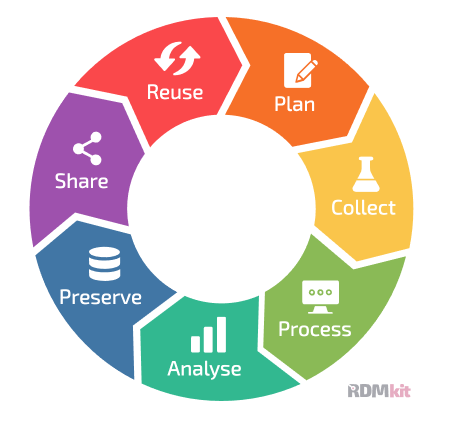
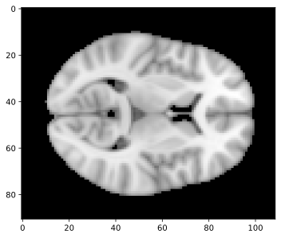
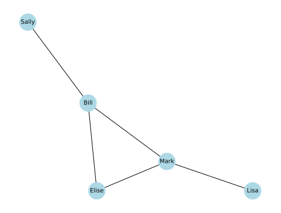
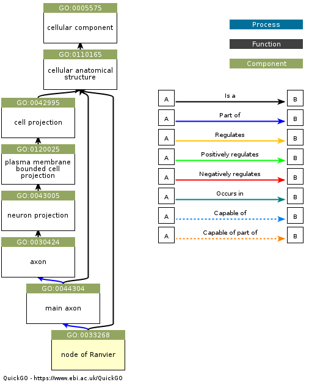
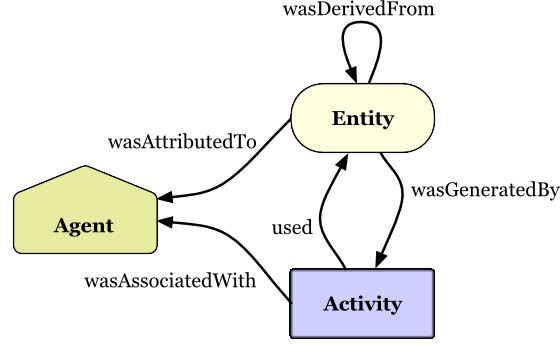

8 Data Organization and Management
Research data are like the water of science: When they stop flowing and dry up, everything withers and ultimately dies. In this chapter I discuss the principles and practices for good research data management and organization.
8.1 Principles of data management
Research data vary in value, and in some cases can be highly valuable. For example, the Large Hadron Collider at CERN, which was responsible for the data supporting the discovery of the Higgs Boson in 2012, has annual computing costs alone estimated at about $286 Million1, such that the loss of the resulting data from those computations would have enormous costs. And in some cases where unique events are detected, such as the LIGO gravitational wave detector or telescope images of cosmic events, the data cannot be recreated if they are lost, making them immensely valuable. For this reason, scientific agencies have long focused on developing frameworks for research data management. In the US, the National Institute of Standards and Technology (NIST) has developed a Research Data Framework2 that provides researchers with a detailed set of best practices for research data management, though these principles are far too bureaucratic for many researchers.
8.1.1 The FAIR Principles
The FAIR Principles (Wilkinson et al. 2016) are a set of guiding principles for the effective sharing of research objects, including but not limited to research data. The FAIR acronym refers to four features of research objects that are essential to effective sharing:
8.1.1.1 Findable
Data are findable if they could be reasonably found by another researcher, usually via standard web searches or database queries. Making data findable involves:
Associating them with a persistent identifier (such as a digital object identifier, or DOI)
Placing them in a repository that is searchable
Including sufficient machine-readable metadata to allow a successful search
8.1.1.2 Accessible
Data are accessible if they can be accessed via clear procedures once they have been found. Making data accessible involves:
Providing access by standard protocols (such as HTTP) or common transfer mechanisms (such as Globus).
Providing access to the metadata, even if the raw data are not available
Providing clear information regarding any limits on access and requirements for data access, if the data are not openly available
Note that “accessible” doesn’t necessarily imply “open”; in many cases, access to the data themselves may require additional data usage agreements between institutions. Accessibility in the FAIR sense simply requires that there is a clear process by which the data can be accessed.
8.1.1.3 Interoperable
Data are interoperable if they can be integrated with other data or processed automatically after they have been accessed. Making data interoperable primarily involves:
making the data accessible via standard file formats
making the metadata available using standard vocabularies or ontologies
8.1.1.4 Reusable
Data are reusable if the requirements for reuse are clearly specified. Making data reusable involves:
Providing a clear usage agreement (or “license”3) for the data
Providing a clear and comprehensive description of the provenance of the data
The FAIR principles are relatively abstract, in the sense that they don’t provide specific guidance about what FAIR means in any particular domain. However, there are numerous resources that can help implement these principles, such as RDMKit and the FAIR Cookbook, both generated by the European ELIXIR organization.
8.2 The data lifecycle
An important concept in research data management is the data lifecycle, which describes the role of data management in each of the different stages of a research project. Figure 1.1 shows an example of how the RDMkit project outlines the stages of the data lifecycle. This figure highlights the fact that data management should be part of the discussion at each stage in a project. In this chapter I will discuss several of the stages in the data lifecycle in detail, though I leave in-depth discussion of data processing and analysis workflows to a later chapter.

8.3 Planning a study
It is essential to think about data management from the inception of a study, to ensure that early decisions don’t lead to pain down the road. Here are some examples of problems that might arise:
If data quality control measures are not put in place at the beginning of the study, then problems with the data might not be discovered until data collection is complete.
If important metadata are not stored, then it might be impossible to properly analyze the data later on.
If procedures for data versioning and provenance are not in place from the beginning, one can end up with confusion about which data files are appropriate for analysis and how the different data files were generated.
If the data are not properly documented, then it might not be possible to understand the meaning of specific variables in the dataset later on.
These are just a few of the problems that can arise, making it important to have a plan for data management at the onset of a research study.
8.3.1 Data Management Plans
Research funding agencies are increasingly requiring data management plans (DMPs) for grant submissions. In the US, both the National Science Foundation (NSF) and National Institutes of Health (NIH) require a DMP to accompany grant proposals, and the European Research Council (ERC) requires that funded projects submit a DMP within their first six months. Creating a data management plan in advance of a project can be very helpful, as it helps encourage the early integration of methods that can help make data management and sharing easier as the project matures. I won’t go into detail regarding these plans, which will vary in their requirements depending on the funding agency. However, there are online tools available to assist with generation of a DMP:
DMPtool - for US funding agencies
Data Stewardship Wizard - for European funding agencies
I recommend always creating a data management plan at the start of a project, even if it’s not required by your institution or funding agency.
8.4 Collecting data
Once data collection starts, it is essential to ensure that the data are properly saved and readable. One should never assume that the code responsible for saving the data has actually worked properly; instead, the data should be separately loaded and checked to make sure that the data are being correctly stored and are properly readable. One good practice is to develop a checklist for new studies to ensure that the data are being collected properly; the details of such a checklist will depend on the specific area of study, but an example from our lab can be found here.
8.5 Storing data
There are several different ways that one can store research data, which vary in their ease of use, speed, reliability, and resilience. One major distinction is between the use of file systems (either physical or cloud systems) or database systems.
Before discussing different options, it is useful to lay out the important considerations regarding different data storage solutions. These are the dimensions across which different options will vary:
Ease of use: How much extra work is required for the user to implement the storage solution?
Collaboration: Do multiple researchers need to access the data? Do they need to be able to modify the dataset concurrently?
Storage capacity: Is the solution sufficient to store the relevant amount of data for the study? Is it scalable over time?
Performance: Is the solution fast enough to enable the required processing and analysis steps?
Accessibility: Is the storage system accessible to the system where the compute will be performed (e.g., local computer, HPC cluster, cloud system)?
Security: Does the system meet the security and compliance requirements for the particular dataset? Does it allow appropriate access control and auditing?
Redundancy: Is the system robust to disasters, ranging from the failure of one hard drive to a catastrophic flood or fire? Does it provide the required backup capability?
Cost: Does the cost of the solution fit within the researcher’s budget? Are there hidden costs that must be taken into account?
Longevity: Will the data remain available in the long term?
It’s also important to point out that most projects end up using multiple storage solutions for different portions of the data lifecycle, given that the considerations listed above have varying importance at different stages.
8.5.1 File system storage
A file system is an organized system for naming and locating computer files on a storage system such as a hard disk. Readers of this book will undoubtedly be familiar with the file systems present on Mac, Windows, or UNIX/Linux systems, which represent a hierarchical tree of folders and files. Here is an example of the file tree for the source code folder in the book project (trimmed for this example):
$ tree -L 2 src
tree src -L 2
src
`-- bettercode
|-- __init__.py
|-- constants.py
|-- data
|-- database_example_funcs.py
|-- database_examples.py
|-- database.py
|-- distance.py
|-- effort
|-- escape_velocity.py
|-- image_utils.py
|-- llm_utils.py
|-- parallel_base.py
|-- parallel_simulation_example.py
|-- penguindata.py
|-- performance
|-- profiling
|-- pubmed.py
|-- rnaseq
`-- textmining.pyWe often use spatial metaphors to describe file systems; we say that a file is “inside” a folder, or that we are going to “move” a file from one folder to another. Working effectively and efficiently with data stored on a file system will be enhanced by a solid knowledge of the various tools that one can use to interact with a file system. In the examples throughout the book I will focus on POSIX-compliant operating systems like MacOS and Linux, but most of the same concepts also apply to other file systems such as Windows.
8.5.1.1 Storage on a PC/laptop hard drive
The simplest way to store data is on a hard drive on a researcher’s personal computer workstation or laptop. While this is easy and relatively cheap for smaller datasets, it is also fraught for numerous reasons:
It is risky, as the failure of the hard drive or loss of the system to damage or theft can result in total loss of the data.
Depending on whether or not the system is encrypted, theft may expose the data in ways that violate confidentiality.
Most PC/laptop systems do not have automatic backup systems, so they are less likely to have a viable backup for recovery if a problem occurs.
It is difficult or impossible to allow collaborators to access the data
For many research domains, the size of the data (often in terabytes) will quickly outstrip the capacity of local hard drives.
For these reasons, I generally recommend to researchers in my lab that they should never rely solely on their own computer as the storage solution for research data.
8.5.1.2 Storage on a network drive
Research data are often stored on network drives. These can vary from a network-attached storage system dedicated to one or more users within a research group, to large-scale network drives managed by an institutional computing center. One common feature of network storage is the use of redundant drive systems, such as RAID (Redundant Array of Independent Disks). These systems combine multiple individual hard drives in ways that provide some degree of redundancy, such that the system can withstand the loss of one or more individual disks (depending on the setup) with no data loss. However, it is critically important to remember that while RAID does provide some degree of fault-tolerance, it does not provide the disaster recovery benefits of a true backup.
Many researchers run and manage their own RAID systems for their group’s use, either attached to a single workstation or to a network. This can be a cost-effective solution for large data storage, especially in situations where institutional data storage resources are not available. However, I think that the apparent robustness of RAID systems can provide a false sense of security to their users. Take the most common RAID setup for redundant storage, RAID 5, in which the system is robust to the failure of one of its hard drives. When a drive fails, the system enters a “degraded” mode, often providing a notice to the user such as a flashing red light or beeping sounds. If this failure goes unnoticed, or the system administrator puts off fixing it, the failure of a second drive during degraded mode or during the rebuilding of the array after replacing the first failed drive (which can often take many hours) can lead to complete data loss. Similarly, if the rebuilding of the array fails (for example, due to power loss during the rebuild or an unrecoverable error in reading from the other drives), this can compromise the data. Safe use of RAID arrays requires consistent attention (including robust notifications of failure) and a strong backup strategy.
Most research institutions now offer large network-attached storage systems for research data, often connected directly to high-performance computing systems. We have used systems like these for our research data for more than 15 years, and I personally would never go back to running my group’s own RAID system (which I did for years beforehand). Foremost, the system administration and hardware management resources of an institutional computing center will almost always outstrip those of most research groups. These large systems will have monitoring and repair procedures in place to ensure against data loss, and in the 15 years that we have used these systems (at Stanford and the University of Texas), we have never experienced data loss due to hardware failure. However, it is important to note that these systems have top-notch resources and staff support that may not be available in many centers, and the systems are still liable to potential disasters. These systems are also highly performant, providing parallel access to the data through high-speed interconnections with the compute system.
Backing up one’s data from a large network drive is a great idea in theory, but in our experience it has often been either impossible or too costly, given the many terabytes of research data that we store on the systems. Given the relatively low likelihood of failure, we have adopted a more risk-tolerant strategy to big data storage:
Original data and any data that cannot be reasonably recreated from original data are stored on at least two independent systems (such as the network drive and a cloud storage system)
Software code is stored on a separate partition that is backed up by the computing center, as well as being pushed to Github.
In this way, we have redundant copies of the code and original data that could be used to recreate the processed data if necessary. This is a risky strategy, but the more risk-averse alternative of continuously backing up an entire 250TB data partition would be cost-prohibitive for many research labs.
8.5.2 Cloud drives
Cloud drives, such as Dropbox or Google Drive, have become very popular for storage and sharing of data. I personally keep all of my code and documents synced to Dropbox from my laptop, and the file recovery capabilities of Dropbox have saved me from myself more than once after accidentally deleting the wrong files. I also regularly share files with other researchers using the Dropbox file sharing features. Because of the potential impact of loss of my laptop, I also keep a “hot spare” laptop that is constantly kept in sync with my primary laptop via Dropbox. Thus, cloud drives are essential for my own research and productivity workflow. However, cloud drives on their own are unlikely to be a primary solution for data storage with large datasets, for several reasons including:
Their cost increases dramatically as the datasets move into the terabyte range.
You can’t bring the compute to the data using these systems - you have to bring the data to the compute. This means that the data need to be fully downloaded to each synced system, resulting in a large number of copies of the dataset.
These systems also are not optimized for large files, and network speed may result in long synchronization times.
In addition, many institutions have specific restrictions regarding the use of cloud drives, especially with regard to private or protected information.
If a research group is going to use cloud drives for storage, it is essential to make sure that the drive is owned by the PI rather than by a lab member. I have heard of cases where a cloud drive belonging to a lab member was used to store important data, and when that lab member left the lab the cloud drive was deleted and the files were lost.
8.5.3 Cloud object storage
An increasingly common storage option, especially for very large datasets, is the use of cloud-based object stores, such as Amazon’s Simple Storage Service (S3) or Google Cloud Storage. In some ways object storage is similar to a standard file system, in that it allows the storage of arbitrary types of files, which can be retrieved using a key that functions like a file path on a file system. However, there are also important differences between object storage and file systems. Most importantly, cloud object stores are accessed via web API calls rather than by operations on a local storage system. Cloud object stores have several features that can make them very attractive for research data storage:
They offer scalability in terms of data size that is limited only by one’s budget
They provide robustness through redundant storage across multiple systems
They are often much less expensive than standard file system (“block”) storage
These systems are most effective when they are accessed directly using computing resources hosted by the same cloud provider. If they are located within the same datacenter, then the network connectivity can be substantially faster. It rarely makes sense to access data directly on a cloud object store from a local computing system, both because of the potentially high cost of reading and writing data from these systems and because of the relatively long latency and low bandwidth of connections between a local system and a cloud provider.
8.5.4 Database storage
In some areas of science, such as genomics, it is common to store data using database systems rather than files on a filesystem. A database system is a software system that stores data records and allows the user to query the records based on specific features and to add, modify, or delete records. A database system can run locally on one’s own computer, or can be accessed remotely via the Internet; most cloud computing providers provide database systems that can be hosted virtually, providing access to storage space that is limited only by one’s budget.
There are many potential benefits to the use of database storage that will be outlined below. However, one important factor in the choice of database versus flat file storage is what software tools will be used to analyze the data. If the analyses are primarily being performed using custom code in Python or R, then it is relatively easy to either retrieve information from a database or load data from a flat file. However, in some fields (including the field of neuroimaging where I work) it is common to use software packages that are built to process flat files, which strongly drives researchers in the field towards that approach.
I will first briefly outline several of the most common forms of database systems, and then show an example that employs each of them.
8.5.4.1 Relational databases
The best known form of database is the relational database, which organizes tabular data into a set of tables with well-defined relationships between them. They also enable queries using a query language, of which Structured Query Language (SQL) is a well-known example. For me, SQL has always been one of those things that I use just infrequently enough that I never actually learn it. Fortunately, LLMs are very good at translating natural language into SQL queries, lowering the barrier of entry for researchers who want to try out database storage.
One important feature of a relational databases is that they generally implement features to ensure data integrity and reliability. These are often referred to as the ACID properties:
Atomicity: Transactions are atomic, meaning that they either commit an entire transaction or none at all: there are no partial transactions. If an attempt to commit a transaction fails then the database remains in the state it was in prior to the failed attempt.
Consistency: A transaction is required to leave the database in a valid state. Any transaction that attempts to violate any constraints or rules (such as a requirement that every measurement includes a valid device key) will be rejected.
Isolation: Individual transactions do not interfere with one another, such that they would never see any partial changes due to another transaction. Thus, one can submit many transactions at once and be sure that they will each be processed correctly without interference from others.
Durability: Transactions are durable, such that once they are written they will be permanent despite failures such as power outages or system crashes (as long as the server is not damaged).
The adherence of relational database systems to these principles helps ensure the integrity of scientific data, in comparison to the use of flat files which do not necessarily achieve these goals.
8.5.4.2 Analytic databases
There is a particular kind of relational database known as an analytic database that is specialized for operations that work across many rows in the database, rather than the focus on individual records in a standard relational database. One widely-used analytic database in the Python ecosystem is DuckDB, which supports very fast operations on large datasets, and integrates well with Pandas and other tools. Unlike traditional relational database systems, it doesn’t require any specialized server setup. In the later chapter on performance optimization I will show how analytic databases can be used to perform some types of analytic computations very quickly.
8.5.4.3 NoSQL databases
While relational databases were the only game in town for many years, there are now a number of other kinds of database, collectively referred to as NoSQL databases because they use non-relational data models (like documents, graphs, or key-value pairs) rather than the tables with fixed schemas that define a standard relational database. Each of these can be very useful for specific problems that match the database’s strengths. Some, but not all, NoSQL databases are ACID compliant. It’s important to ensure that one has the right safeguards in place when using a non-compliant database system.
Here I provide a brief overview of several popular forms of NoSQL databases.
Document stores
A document store is basically what it sounds like: a system into which one can dump documents and then query them. I think of this as in some ways the opposite of a SQL database. In the SQL database, most of the work comes in designing the database schema, which will determine up front how the data are represented; after that, querying is fairly straightforward. In a document store, one can insert documents with varying structure into the database without the need for a predefined schema. The hard work in a document store comes in figuring out how to structure queries and indexes effectively, especially when the structure of the data varies. For most of the tasks where I have used databases I have chosen document stores over relational databases because of the flexibility that they offer. The line between document stores and relational databases has become blurred as some relational databases (such as PostgreSQL) can now store JSON objects in a way that acts similarly to an object store.
Graph databases
A graph database is built to efficiently store and query graph-structured data. These are data where the primary features of interest for querying are the relationships between entities, rather than the entities themselves. Scientific examples could include social network relationships, protein-protein interactions, or connections between neurons or brain areas. Graph databases are particularly good at finding multi-step relationships within the graph, which are much more difficult to find using a relational database or document store. A commonly used graph database is Neo4j, which has its own query language called Cypher that is specifically designed for queries on graph structure.
Vector databases
A relatively recent entry into the database field is the vector database, which is optimized for finding similar numerical vectors. These have become essential in the context of AI, because they can be used to quickly find similar items that are embedded in a vector space, typically using neural networks. These items can include text documents, images, molecular structures, or any other kind of data that can be embedded in a vector space. Vector databases differ in that they can return ranked similarity ratings in addition to a discrete set of matches, and thus they are best for performing analyses that involve similarity-based search. Here too the boundaries have become fuzzy, with extensions to relational databases like PostgreSQL that allow them to be used as vector databases.
8.6 Managing original data
By original data I mean data that were obtained by the researcher from another source, such as from a recording device or by manual recording. These are the data that, if lost, would constitute an irretrievable loss of the scientific record. As such, these data should be protected in a way that is different from derivative data that are obtained via processing of the original data.
8.6.1 Immutable storage
It is important to ensure that the original data are not modified, either accidentally or intentionally. This can be achieved by setting the permissions on the files as read-only, though it is important to note that a user with superuser privileges could still make changes to the data. For this reason, it is also important to store information that allows the validation of each file as matching its original. This can be easily achieved by computing a checksum for each file and storing it separately. A checksum is a mathematical function of the file contents, which changes if any of the data in the file are changed and thus can serve as a “fingerprint” for the file contents:
$ echo "file contents" > file1.txt
$ echo "file content" > file2.txt
$ diff file1.txt file2.txt
1c1
< file contents
---
> file content
$ md5sum file1.txt
081404b3d2ae5bf599add15b7445ac07 file1.txt
$ md5sum file2.txt 1 ↵
186e4cee4e00635b35be4236193f33fb file2.txtThere are various types of checksums, such as MD5 (used in the example above) or SHA-1, any of which should be suitable for validating file identity. However, the different methods produce different checksums so it’s important to document which method was used to create them.
Tip
Set all original data files to read-only and store checksums for them, so that you can both protect them from changes and identify changes if they occur.
8.6.2 Backup
Disasters can occur that can render data irretrievable, from a major flood or earthquake to a cup of coffee spilled onto a laptop. It is essential to maintain a backup of the original data for disaster recovery purposes. This backup should be located on a system that is geographically separate from the main storage, such as a cloud server.
Many researchers store their data using RAID systems (which stands for “redundant array of independent disks”), which can provide some degree of resilience against disk failure. Depending on the RAID configuration, these systems can survive the failure of one or more individual disks without data loss. However, storage on a RAID system is not a suitable replacement for backup, as these systems can still fail (e.g., due to a fire or flood that damages multiple disks).
8.7 Data access
Access to research data within a research group should operate by the Principle of Least Privilege, which is a general approach to computer security that states that any user should have only enough privileges to perform their intended actions, and no more. While this is most relevant to multi-user systems, it is often relevant even to systems with only a single user. With regard to data access, this principle has two important implications. First, any particular dataset should be accessible only to users who have permission and need to use those data. Second, if data are meant to be accessed by a user but not modified by that user, then the user should have read-only access to the data.
Even when a user may have a need to modify data, it often makes sense to set the data as read-only, so that any modifications require an explicit permissions change before the modifications can be made. This can help prevent accidental changes or data deletion, even on a single-user system.
8.8 Data formats and file types
There is a wide range of different data formats and file types used across science. Here I will cover some of the most widely used formats and file types, realizing that there are many areas of science that use highly specialized formats/file types that I can’t cover in depth here.
8.8.1 Tabular data
Tabular data are loosely defined as data stored in rows and columns, as in a spreadsheet. A data frame is a particular representation of tabular data, in which each column in the dataset has a label and each row has an index value that refers to that row. The packages supporting data frames (such as pandas in Python) generally provide a set of operations that can be performed on the data frame, such as filtering, sorting, merging, or pivoting.
8.8.1.1 Long, wide, and tidy tabular data
There are multiple ways to organize data within a tabular dataset, reflecting what each column and row refer to. This distinction is often referred to as long versus wide data, though in reality there is really a spectrum of organization between these extremes. Wide data generally refers to data where each row refers to a single observational unit (such as a one site, person, or planet), and each column refers to different variables measured for that unit. For example, let’s say that we had measurements of height, weight, and blood pressure from three individuals. A wide representation of these data would have one row per individual, with an identifier column identifying the individual and separate columns for each of the measurements, as shown in Table 1.1.
| id | height | weight | blood_pressure |
|---|---|---|---|
| 1 | 170 | 70 | 120 |
| 2 | 180 | 80 | 130 |
| 3 | 175 | 75 | 125 |
Long data generally refers to data where different variables measured for a unit are spread across rows. In this case, there are separate columns that specifies the variable being measured, the value of the variable for that unit, and the identity of the unit being measured, as shown in Table 1.2.
| id | measurement | value |
|---|---|---|
| 1 | height | 170 |
| 2 | height | 180 |
| 3 | height | 175 |
| 1 | weight | 70 |
| 2 | weight | 80 |
| 3 | weight | 75 |
| 1 | blood_pressure | 120 |
| 2 | blood_pressure | 130 |
| 3 | blood_pressure | 125 |
A related concept is the notion of tidy data, popularized by Hadley Wickham who is leader in the R language community. While it is often associated with long data, the concept of tidy data actually refers to the meaning of the data rather than its shape. Tidy data has three features, as specified by (Wickham 2014):
each variable is a column
each observation is a row
each type of observational unit is a table.
It’s easiest to understand these concepts by looking at some examples of datasets that are not tidy, following the examples laid out by (Wickham 2014)
Column headers are values, not variable names
Sometimes data are spread across columns where each column refers to a different value of the variable. For example, the following table shows cancer pathology data from three hospitals, with different columns quantifying the number of samples falling into each of four different tumor stages, as shown in Table 1.3.
| site | Stage1 | Stage2 | Stage3 | Stage4 |
|---|---|---|---|---|
| H1 | 46 | 27 | 38 | 32 |
| H2 | 37 | 48 | 31 | 27 |
| H3 | 25 | 37 | 33 | 23 |
There are really three different variables represented in this table: Site, Stage, and frequency. What we really want is to have three columns, representing those three variables. We can achieve this using the melt function from pandas:
df_tidy = pd.melt(df, id_vars=["site"],
var_name="Stage", value_name="Frequency")
# make stage an integer
df_tidy.Stage = df_tidy.Stage.str.replace("Stage", "").astype(int)
print(df_tidy.to_markdown(index=False))The results are shown in Table 1.4.
| site | Stage | Frequency |
|---|---|---|
| H1 | 1 | 46 |
| H2 | 1 | 37 |
| H3 | 1 | 25 |
| H1 | 2 | 27 |
| H2 | 2 | 48 |
| H3 | 2 | 37 |
| H1 | 3 | 38 |
| H2 | 3 | 31 |
| H3 | 3 | 33 |
| H1 | 4 | 32 |
| H2 | 4 | 27 |
| H3 | 4 | 23 |
Multiple variables are stored in one column
This pattern takes the previous one a step further, by defining columns based on the values of more than one variable. For example, let’s say that there data for both lung and prostate cancer, as shown in Table 1.5.
| site | Stg1Lng | Stg2Lng | Stg3Lng | Stg4Lng | Stg1Prs | Stg2Prs | Stg3Prs | Stg4Prs |
|---|---|---|---|---|---|---|---|---|
| H1 | 44 | 32 | 21 | 28 | 48 | 24 | 44 | 34 |
| H2 | 22 | 30 | 22 | 45 | 26 | 49 | 31 | 32 |
| H3 | 48 | 40 | 26 | 33 | 46 | 33 | 24 | 25 |
In this example, each value column represents a combination of stage and type of cancer. We can tidy this by first melting the data frame, and then splitting the combined column names into separate variables for Stage and Cancer type:
df_tidy = pd.melt(df, id_vars=["site"],
var_name="Stage_Cancer", value_name="Freq")
df_tidy[["Stage", "Cancer"]] = df_tidy.Stage_Cancer.str.extract(r'Stg(\d)(\w{3})')
del df_tidy["Stage_Cancer"]
df_tidy.Stage = df_tidy.Stage.astype(int)
# reorder columns to match our expectations
df_tidy = df_tidy[["site", "Stage", "Cancer", "Freq"]]
print(df_tidy.to_markdown(index=False))The results are shown in Table 1.6.
| site | Stage | Cancer | Freq |
|---|---|---|---|
| H1 | 1 | Lng | 44 |
| H2 | 1 | Lng | 22 |
| H3 | 1 | Lng | 48 |
| H1 | 2 | Lng | 32 |
| H2 | 2 | Lng | 30 |
| H3 | 2 | Lng | 40 |
| H1 | 3 | Lng | 21 |
| H2 | 3 | Lng | 22 |
| H3 | 3 | Lng | 26 |
| H1 | 4 | Lng | 28 |
| H2 | 4 | Lng | 45 |
| H3 | 4 | Lng | 33 |
| H1 | 1 | Prs | 48 |
| H2 | 1 | Prs | 26 |
| H3 | 1 | Prs | 46 |
| H1 | 2 | Prs | 24 |
| H2 | 2 | Prs | 49 |
| H3 | 2 | Prs | 33 |
| H1 | 3 | Prs | 44 |
| H2 | 3 | Prs | 31 |
| H3 | 3 | Prs | 24 |
| H1 | 4 | Prs | 34 |
| H2 | 4 | Prs | 32 |
| H3 | 4 | Prs | 25 |
Variables are stored in both rows and columns
We could also have some variables denoted by their own column with others split across columns, as shown in Table 1.7.
| site | Cancer | Stage1 | Stage2 | Stage3 | Stage4 |
|---|---|---|---|---|---|
| H1 | Lng | 44 | 32 | 21 | 28 |
| H1 | Prs | 48 | 24 | 44 | 34 |
| H2 | Lng | 22 | 30 | 22 | 45 |
| H2 | Prs | 26 | 49 | 31 | 32 |
| H3 | Lng | 48 | 40 | 26 | 33 |
| H3 | Prs | 46 | 33 | 24 | 25 |
Here we can melt the data frame to collect the Stage columns:
df_both_tidy = pd.melt(df_both, id_vars=["site", "Cancer"],
var_name="Stage", value_name="Frequency")
df_both_tidy.Stage = df_both_tidy.Stage.str.replace("Stage", "").astype(int)
print(df_both_tidy.to_markdown(index=False))The results are shown in Table 1.8.
| site | Cancer | Stage | Frequency |
|---|---|---|---|
| H1 | Lng | 1 | 44 |
| H1 | Prs | 1 | 48 |
| H2 | Lng | 1 | 22 |
| H2 | Prs | 1 | 26 |
| H3 | Lng | 1 | 48 |
| H3 | Prs | 1 | 46 |
| H1 | Lng | 2 | 32 |
| H1 | Prs | 2 | 24 |
| H2 | Lng | 2 | 30 |
| H2 | Prs | 2 | 49 |
| H3 | Lng | 2 | 40 |
| H3 | Prs | 2 | 33 |
| H1 | Lng | 3 | 21 |
| H1 | Prs | 3 | 44 |
| H2 | Lng | 3 | 22 |
| H2 | Prs | 3 | 31 |
| H3 | Lng | 3 | 26 |
| H3 | Prs | 3 | 24 |
| H1 | Lng | 4 | 28 |
| H1 | Prs | 4 | 34 |
| H2 | Lng | 4 | 45 |
| H2 | Prs | 4 | 32 |
| H3 | Lng | 4 | 33 |
| H3 | Prs | 4 | 25 |
Single type of observational unit spread across multiple tables
Sometimes we might have different data frames for each observation unit, such as a different data frame for each hospital in our example. To fix this we can simply merge the data frames by concatenating them:
df_merged = pd.concat([df1, df2, df3], ignore_index=True)This assumes that there is a variable that defines different groups (in this case site); otherwise that would need to be added before concatenation.
8.8.1.2 Tabular file formats
The most common tabular file formats are comma-separated value (CSV) or tab-separated value (TSV) files. Both of these have the benefit of being represented in plain text, so their contents can be easily examined without any special software. I generally prefer to use tabs rather than commas as the separator (or delimiter), primarily because they can more easily naturally represent longer pieces of text that may include commas. These can also be represented using CSV, but they require additional processing in order to escape the commas within the text so that they are not interpreted as delimiters.
Text file formats like CSV and TSV are nice for their ease of interpretability, but they are highly inefficient for large data compared to optimized file formats, such as the Parquet format. To see this in action, I loaded a brain image and saved all of the non-zero data points (857,785 to be exact) to a data frame, which I then saved to CSV and Parquet formats. Looking at the resulting files, we can see that the Parquet file is only about 20% the size of the CSV file:
$ du -sk /tmp/brain_tabular.*
19464 /tmp/brain_tabular.csv
3804 /tmp/brain_tabular.parquetWhen we look at the amount of time needed to load these files, we see an even stronger edge for the Parquet format. Because the loading times can vary due to other activity on the system, we load each 100 times to get an average load time:
import time
# time loading of each format
# load 100 times to get average loading time of each format
nreps = 100
start = time.time()
for _ in range(nreps):
df_csv = pd.read_csv('/tmp/brain_tabular.csv')
end = time.time()
csv_time = (end - start)/nreps
print(f"CSV load time: {csv_time:.4f} seconds")
start = time.time()
for _ in range(nreps):
df_parquet = pd.read_parquet('/tmp/brain_tabular.parquet')
end = time.time()
parquet_time = (end - start)/nreps
print(f"Parquet load time: {parquet_time:.4f} seconds")
print(f'ratio {csv_time/parquet_time:.2f}')CSV load time: 0.0719 seconds
Parquet load time: 0.0082 seconds
ratio 8.77Here we see that loading the CSV file takes almost 9 times as long as the Parquet file. For a single file of this size this is not a meaningful difference in times, but for projects involving many files or much larger files the difference in loading times could become a real game-changer.
8.8.1.3 Russ’s First Law of Tabular Data Management
“Don’t use spreadsheets to manage scientific data.”
Spreadsheet software such as Microsoft Excel is commonly used by researchers for all sorts of data management and processing operations. Why are spreadsheets problematic?
They encourage manual manipulation of the data, which makes the operations non-reproducible by definition.
Spreadsheet tools will often automatically format data, sometimes changing things in important but unwanted ways. For example, gene names such as “SEPT2” and “MARCH1” are converted to dates by Microsoft Excel, and some accession numbers (e.g., “2310009E13”) are converted to floating point numbers. An analysis of published genomics papers (Ziemann et al. 2016) found that roughly twenty percent of supplementary gene lists created using Excel contained errors in gene names due to these conversions.
It is very easy to make errors when performing operations on a spreadsheet, and these errors can often go unnoticed. A well known example occurred in the paper “Growth in a time of debt” by the prominent economists Carmen Reinhart and Kenneth Rogoff (Reinhart & Rogoff 2010). This paper claimed to have found that high levels of national debt led to decreased economic growth, and was used as a basis for promoting austerity programs after the 2008 financial crisis. However, researchers subsequently discovered that the authors had made an error in their Excel spreadsheet, excluding data from several countries; when the full data were used, the relationship between growth and debt became much weaker (Herndon et al. 2013).
Spreadsheet software can sometimes have limitations that can cause problems. For example, the use of an outdated Microsoft Excel file format (.xls) caused underreporting of COVID-19 cases due to limitations on the number of rows in that file format, and the lack of any warnings when additional rows in the imported data files were ignored4.
Spreadsheets do not easily lend themselves to version control and change tracking, although some spreadsheet tools (such as Google Sheets) do provide the ability to create labeled snapshots of the data.
I will occasionally use Microsoft Excel to visualize a data file, but I think that spreadsheet tools should almost never be used as part of a scientific data workflow.
8.8.2 Multidimensional array data
Many forms of data are represented as multidimensional arrays. For example, many forms of microscopy data are represented as either two-dimensional (slice) or three-dimensional (volume) arrays, while dynamic imaging modalities are often represented as three- or four-dimensional data, with the first two or three dimensions representing space and the final dimension reflecting time. Within Python these are generally processed using NumPy, which efficiently processes large multidimensional arrays. As an example, I loaded a three-dimensional brain template. After loading the data into a NumPy array, we can see its shape:
>>> data.shape
(91, 109, 91)In this case, the three dimensions are represent the left/right, front/back, and up/down axes of the brain. We can also use the imshow function from matplotlib.pyplot to view a two-dimensional slice of the image (in this case, the 40th slice in the array), as shown in Figure 1.2:
import matplotlib.pyplot as plt
slice_z = 40
plt.imshow(data[:, :, slice_z], cmap='gray')
8.8.2.1 Multidimensional array file formats
A common file format for array data in Python is the native NumPy format, which is known by its extension, .npy. This file format has a number of benefits for Python users:
It is very fast to both read and write files
It supports memory mapping, which allows portions of the file to be read without loading the entire file
It has perfect fidelity and maintains exact data types
It is very easy to use (
np.load()to load andnp.save()to save).
However, the .npy format also has a number of drawbacks for scientific data:
It is harder for non-NumPy users to work with, requiring specialized libraries to read in languages other than Python.
It does not compress the data, so files can be much larger than a compressed file format. This can become very important when working with large sparse datasets.
It doesn’t support storage of metadata alongside the data
There are several other commonly used standard file formats for array data; we will focus on HDF5 and Zarr. HDF5 is a longstanding format for storage of large datasets, which is supported by nearly all programming languages. It has built-in support for compression, and allows access to specific chunks without loading the entire dataset. However, many researchers (at least within the Python ecosystem) are moving towards the Zarr format, which stores data in a set of smaller chunk files rather than a single large file as in HDF5. Zarr has several advantages over HDF5:
Zarr is much more efficient for cloud storage, since only the specific chunk file needs to be accessed
Zarr is simpler than HDF5, and has a more Pythonic interface
Zarr makes it very easy to add new data to a file, which can be more difficult in HDF5
Let’s use some other brain imaging data where the first three dimensions are spatial and the final dimension reflects 512 different components that define a probabilistic atlas of the brain, mapping membership of each spatial location in each of the components in the atlas. This is a dataset that is highly sparse; after thresholding to remove very small values, only about 0.1% of the values are nonzero. This redundancy means that we should be able to get a high degree of compression for this dataset. Let’s first save the data to a .npy file and look at its (uncompressed) size:
> np.save('/tmp/difumo.npy', difumo_data)
> !du -sm /tmp/difumo.npy
3526 /tmp/difumo.npyThat’s about 3.5 gigabytes. Now let’s save it to HDF5:
>>> import h5py
... with h5py.File('/tmp/difumo.h5', 'w') as f:
... f.create_dataset('difumo', data=difumo_data, compression='gzip')
>>> !du -sm /tmp/difumo.h5
785 /tmp/difumo.h5Due to the compression by HDF5, the data file is about 5 times smaller with HDF5! We can also look at the same with Zarr:
>>> import zarr
... zarr_data = zarr.open('/tmp/difumo.zarr', mode='w',
... shape=difumo_data.shape, dtype=difumo_data.dtype)
... zarr_data[:] = difumo_data
>>> !du -sm /tmp/difumo.zarr
763 /tmp/difumo.zarrThis shows that Zarr obtains slightly more compression than HDF5, each using its default compression method; note that it might be possible to get better compression using custom compression methods for each. We can also compare the time needed to load each of the files; because of the relatively longer loading time for these files, we only perform 10 repetitions in this example:
import time
nreps = 10
def load_h5py(filename: str) -> np.ndarray:
with h5py.File(filename, 'r') as f:
return f['difumo'][:]
def load_zarr(filename: str) -> np.ndarray:
zarr_data = zarr.open(filename, mode='r')
return zarr_data[:]
loader_funcs = {
'npy': np.load,
'h5': load_h5py,
'zarr': load_zarr
}
for ext in ['npy', 'h5', 'zarr']:
start_time = time.time()
filename = f'/tmp/difumo.{ext}'
for _ in range(nreps):
data_loaded = loader_funcs[ext](filename)
end_time = time.time()
avg_load_time = (end_time - start_time) / nreps
print(f"Average loading time for {ext}: {avg_load_time:.6f} seconds")Average loading time for npy: 0.313126 seconds
Average loading time for h5: 7.218049 seconds
Average loading time for zarr: 0.875727 secondsThis shows that Zarr is slightly slower than the native NumPy file loader for these data, but much faster than HDF5. Note, however, that performance for HDF5 and Zarr will depend on the details of the type of file, compression algorithm, and chunking scheme used for the data, so
I would suggest that you use Zarr files to store large binary data files such as matrices unless you have a strong need for HDF5 compatibility.
8.8.2.2 Symmetrical matrices
It’s not uncommon to work with symmetrical matrices, such as correlation matrices. Since the upper triangle and lower triangle of a symmetric matrix are simply transposed versions of one another, there is no need to save both - we can simply save either the upper or lower triangle. Depending on the application, this may be a useful way to save space and loading time.
8.8.3 Network/graph data
A graph is a representation that includes a set of nodes along with a set of edges that represent connections between those nodes. In some cases these are unweighted (binary), such as whether two individuals are friends on a social network. In other cases they are weighted, such as number of common friends that two people have on a social network. Graphs also vary in being either undirected, such that the relationship is bidirectional between the two nodes, or directional, such that the relationship has a direction. For example, friendship on a social network is an undirected relationship, whereas following on a social network is a directed relationship, since one person can follow the other, vice versa, or both.
One way to represent a graph is through a set of adjacencies, or connections. Here is an example of a small social network, in which we generate a graph within the networkx package using a set of adjacencies:
import networkx as nx
friends = [
('Bill', 'Sally'),
('Bill', 'Mark'),
('Bill', 'Elise'),
('Mark', 'Elise'),
('Mark', 'Lisa')
]
G = nx.Graph()
G.add_edges_from(friends)
G.edgesEdgeView([('Bill', 'Sally'), ('Bill', 'Mark'), ('Bill', 'Elise'), ('Mark', 'Elise'), ('Mark', 'Lisa')])We can view this as a graph using the plotting functions in networkx, as shown in Figure 1.3

networkx.
Another way to represent a graph is via an adjacency matrix, which numerically represents the relations between nodes in the graph. We can generate this from the networkx graph:
adj_matrix = nx.adjacency_matrix(G).todense()
labels = list(G.nodes)
adj_df = pd.DataFrame(adj_matrix, index=labels, columns=labels)
print(adj_df.to_markdown())| Bill | Sally | Mark | Elise | Lisa | |
|---|---|---|---|---|---|
| Bill | 0 | 1 | 1 | 1 | 0 |
| Sally | 1 | 0 | 0 | 0 | 0 |
| Mark | 1 | 0 | 0 | 1 | 1 |
| Elise | 1 | 0 | 1 | 0 | 0 |
| Lisa | 0 | 0 | 1 | 0 | 0 |
8.8.3.1 Graph data file formats
There are a number of different file formats for graph data, used variously across different software packages. For example, the NetworkX package supports 13 different graph formats! The decision about which format to use will likely depend on the specific software packages that you plan to use. I have had good luck with both GraphML and Pajek formats.
For large networks that are dense (i.e., networks where most connections are nonzero) or weighted (i.e., the edges have continuous weights) it might make more sense to save the network as an adjacency matrix, making sure to also save the associated node labels. This allows taking advantage of the efficiency of formats like Zarr, though it will incur the overhead of having to load the adjacency matrix into the graph engine.
8.8.4 Specialized data formats
Many subfields of science have developed specific file formats for the data in their domain, such as:
In genomics, there are multiple formats include FASTQ for raw sequencing reads, BAM/SAM for aligned sequence reads, VCF for variant calls, and BED for genomic coordinates
In structural biology, PDB/mmCIF for protein structures, and MTZ for X-ray diffraction data
In chemistry, MOL/SDF for molecular structures
In astronomy, FITS and ASDF for telescope data
In neuroscience, NWB and NIfTI
In the earth sciences, there are numerous formats for various types of spatial data
There is always a tension between using a domain-specific standard versus a general standard; the choice for any particular project will depend heavily on which software packages are being used for data analysis and what data formats they support, as well as the efficiency of the file formats.
8.9 Data organization schemes
It is essential to use a consistent data organization scheme for one’s research data. This is obvious when the data are shared with other researchers, but even if the data will never be shared with anyone else, good organization is essential when one looks back at one’s own data in the future. Thus, good data organization is a gift to your future self!
The most important principle of data organization is that the scheme should be easily understood and consistently applied. If a standard scheme exists in one’s field of research, then I would strongly suggest using that scheme, or at least adapting it to one’s local requirements. A second important principle is that file and folder names should be machine readable. Increasingly we want to use automated tools to parse large datasets, and a machine-readable organization scheme (as I discuss below) is essential to doing this effectively.
8.9.1 File granularity
One common decision that we need to make when managing data is to save data in more smaller files versus fewer larger files. The right answer to this question depends in part on how we will have to access the data. If we only need to access a small portion of the data and we can easily determine which file to open to obtain those data, then it probably makes sense to save many small files. However, if we need to combine data across many small files, then it likely makes sense to save the data as one large file. For example, in the data management notebook in the project repository there is an example where I create a large (10000 x 100000) matrix of random numbers, and save them either to a single file or to a separate file for each row. When loading these data, the loading of the single file is about 5 times faster than loading the individual files.
Another consideration about the number of files has to do with storage systems that are commonly used on high-performance computing systems. On these systems, it is common to have separate quotas for total space used (e.g., in terabytes) as well as for the number of inodes, which are structures that store information about files and folders on a UNIX filesystem. Thus, generating many small files (e.g., millions) can sometimes cause problems on these systems. For this reason, we generally err on the side of generating fewer larger files versus more smaller files when working on high-performance computing systems (as I discuss further in the later chapter on high-performance computing).
8.9.2 Data file/folder naming conventions
From my standpoint, the most important consideration for naming of files and folders is the ability to automatically parse the file/folder names. While there are many possible ways to do this, I prefer the approach used in the Brain Imaging Data Structure (BIDS), which our group was involved in developing (Gorgolewski et al. 2016). This is a standard for organizing a wide range of brain imaging data types, but the strategy behind the standard is applicable to almost any scientific data type. The basic idea is to embed a set of key-value pairs in the name, along with a suffix that defines the data type along with a file type extension for files. The schema looks like this:
<key>-<value>_<key>-<value>_suffix.extension
This is useful because it is very easy to automatically parse such a file name. For example, let’s say we have a file called ‘sub-001_sess-1A_desc-Diffusion_fa.nii.gz’. We can easily parse file names like this as follows:
filename = 'sub-001_sess-1A_desc-Diffusion_fa.nii.gz'
def split_filename(filename: str) -> tuple[str, dict[str, str]]:
"""Parse a BIDS-style filename into its extension and key-value pairs."""
extension = '.'.join(filename.split('.')[1:])
name = filename.split('.')[0]
key_values = {k: v for k, v in (item.split('-') for item in name.split('_')[:-1])}
key_values['suffix'] = name.split('_')[-1]
return extension, key_values
extension, key_values = split_filename(filename)
print(key_values){'desc': 'Diffusion', 'sess': '1A', 'sub': '001', 'suffix': 'fa'}This is very useful because it allows one to easily query a large set of files for particular key-value pairs, and also allows one to easily parse the key-value pairs for a particular file.
It’s worth noting that using a naming scheme like this requires strict attention to naming hygiene. In particular, it’s essential to ensure that the delimiter characters (“-”, “_”, and “.”) don’t accidentally get used within the values. For example, if one were using an analysis called “IS-RSA”, using this for the description (e.g., “’sub-001_sess-1A_desc-IS-RSA_corr.zarr”) would cause file parsing to fail.
8.10 Metadata
Metadata refers to “data about data”, and generally is meant to contain the information that is needed to interpret a dataset. In principle, someone who obtains a dataset should be able to understand and reuse the data using only the metadata provided alongside the dataset. There are many different types of metadata that might be associated with a study, and it is usually necessary to decide how comprehensive to be in providing detailed metadata. This will often rely upon the scientific expertise and judgment of the researcher, to determine which particular metadata would be essential for others to usefully interpret and reuse the data.
An important concept in metadata is the ontology. In the context of bioinformatics, an ontology is a structured representation of the entities that exist in a domain (defined by a controlled vocabulary) and the relationships between these entities. One of the best known examples is the Gene Ontology, which represents classes of biological entities including Molecular Functions, Cellular Components, and Biological Processes. As an example, Figure 1.4 shows a hierarchical depiction for a specific cellular component.

Ontologies are very useful for specifying metadata, because they allow us to know exactly what a particular entry in the metadata means, and thus allow us to establish links between equivalent entities across datasets. For example, let’s say that a researcher wants to query a database for datasets related to insulin signaling in pancreatic beta cells in Type II diabetes, and that there are three relevant datasets in the database. Without an ontology, each of the teams might use different terms to refer to these cells (such as “pancreatic beta cells”, “insulin-producing cells”, and “islet beta cells”), making it difficult to link the datasets. However, if each of the datasets were to include metadata linked to a specific ontology (in this case, the identifier CL:0000169 from the Cell Ontology, which refers to “type B pancreatic cell”), then it becomes much easier to find and link these datasets. There are at present a broad range of ontologies available for nearly every scientific domain; the BioPortal project (bioportal.bioontology.org) provides a tool to search across a wide range of existing ontologies.
8.10.1 Metadata file formats
An important feature of metadata is that it needs to be machine-readable, meaning that it is provided in a structured format that can be automatically parsed by a computer. Common formats are Extensible Markup Language (XML) and JavaScript Object Notation (JSON). JSON is generally simpler and more human-readable, but it doesn’t natively provide the ability to define attributes for particular entries (such as the units of measurement) or link to ontologies. An extension of JSON known as JSON-LD (JSON for Linked Data) provides support for the latter, by allowing links to controlled vocabularies.
For example, let’s say that I wanted to represent information about an author (myself) in JSON, which I might do like this:
{
"name": "Russell Poldrack",
"affiliation": "Stanford University",
"email": "russpold@stanford.edu"
}Now let’s say that someone else wanted to search across datasets to find researchers from Stanford University. They would have no way of knowing that I used the term “affiliation” as opposed to “organization”, “institution”, or other terms. We could instead represent this using JSON-LD, which is more verbose but allows us to link to a vocabulary (in this case schema.org) that defines these entities by providing a @context tag:
{
"@context": "https://schema.org",
"@type": "Person",
"name": "Russell Poldrack",
"affiliation": {
"@type": "Organization",
"name": "Stanford University"
},
"email": "russpold@stanford.edu"
}8.11 Data documentation
While metadata is generally meant to be used by computers, it is also important to provide human-readable documentation for a dataset, so that other researchers (or one’s own self in the future) can understand and reuse the data successfully. There are two forms of documentation that can be important to provide: data dictionaries and codebooks.
8.11.1 Data dictionaries
A data dictionary provides information about each of the variables in a dataset. These are meant to be human readable, though it can often be useful to share them in a machine-readable format (such as JSON) so that they can also be used in programmatic ways (such as presenting them in a nicely formatted way on the web). A data dictionary includes information such as:
an understandable description of the variable
the data type (e.g., string, integer, Boolean)
the allowable range of values
For example, a study of immune system function in human participants might include the following in its data dictionary:
| Variable Name | Data Type | Allowable Values | Description |
|---|---|---|---|
| age | Integer | 0-120 | Age of the participant in years |
| gender | String | M, W, O | Participant’s self-identified gender |
| crp | Numeric | 0.1-50.0, -90, -98, -99 | C-reactive protein level (mg/L) |
8.11.2 Codebooks
A codebook is meant to be a more human-friendly description of the content of the dataset, focusing on how the data were collected and coded. It often includes a detailed description of each variable that is meant to help understand and interpret the data. For the example above, the codebook might include the following:
Variable Information
Variable name: crp
Variable label: High-sensitivity C-reactive protein
Variable definition: A quantitative measure of C-reactive protein in blood serum.
Measurement and Coding
Data Type: Numeric (Floating Point, 2 decimal places)
Units of Measurement: mg/L (milligrams per Liter)
Measurement Method: Immunoturbidimetric assay.
Instrument: Roche Cobas c702 clinical chemistry analyzer.
Allowable Range: 0.10 - 50.00
- Note: The lower limit of detection for this assay is 0.10 mg/L.
Values and Codes:
Numerical Value: A continuous value from 0.10 to 50.00 represents the measured concentration in mg/L.
-90: Value below the lower limit of detection (<0.10 mg/L).
-98: Unusable sample (e.g., sample was hemolyzed, insufficient quantity).
-99: Missing (e.g., sample not collected, participant refused blood draw).
Collection Protocol and Provenance
Specimen Type: Serum from a venous blood sample.
Collection Procedure: Blood was drawn from the antecubital vein into a serum separator tube (SST) after an 8-hour overnight fast. The sample was allowed to clot for 30 minutes, then centrifuged at 1,500 x g for 15 minutes. Serum was aliquoted and stored at -80°C until analysis.
Date of Creation: 2025-11-15
Version: 1.0
It is essential to create data dictionaries and codebooks upon the generation of the dataset; otherwise important details may be lost.
8.12 Provenance
Provenance refers to particular metadata regarding the history of processes and inputs that give rise to a particular file. Tracking of provenance is essential to ensure that one knows exactly how a particular file was created. This includes:
the origin of original data (such as the instrument used to collect it, or date of collection)
the specific input files that went into creation of the file, for files that are derived data
the specific versions of any software tools that were used to create the file
the specific settings used for the software tools
Tracking of provenance is non-trivial. The World Wide Web Consortium (W3C) has developed a framework called PROV5 which defines a model for the representation of provenance information. This framework provides an overview of the many features of provenance that one might want to record for an information that is shared online. The PROV data models defines three main concepts:
Entities: things that are produced, such as datasets and publications
Activities: processes that involve using, generating, or modifying entities
Agents: People, organizations, or artifacts (such as computers) that are responsible for activities
In addition, the model defines a set of relationships between these concepts, as seen in Figure 1.5. This data model highlights the breadth of information that needs to be represented in order to accurately record provenance.

There are several different ways to track provenance in practice, which vary in their complexity, comprehensiveness, and ease of use. I will discuss this further in the following chapter on workflows.
8.13 Handling of sensitive data
Researchers in some fields, particularly those who work with data obtained from human subjects, often handle data are sensitive, meaning that they may require a higher degree of security and/or additional procedures to protect the privacy and confidentiality of the research subjects.
8.13.1 Data security
Sensitive data often require additional protections from potential breach. The minimum requirement is generally that the data are housed on an encrypted file system and any transfers are made via an encrypted channel, and that access to the system is controlled. Some datasets include more stringent security measures in their Data Use Agreement. For example, the Adolescent Brain Cognitive Development (ABCD) study, a widely used dataset on brain and cognitive development, requires that any systems used to house or process the data must meet a specific standard for sensitive information known as NIST SP 800-1716. This standard comprises 17 “families” of security requirements that a system must meet to be compliant:
Access Control
Maintenance
Security Assessment and Monitoring
Awareness and Training
Media Protection
System and Communications Protection
Audit and Accountability
Personnel Security
System and Information Integrity
Configuration Management
Physical Protection
Planning
Identification and Authentication
Risk Assessment
System and Services Acquisition
Incident Response
Supply Chain Risk Management
In general this level of security certification will be limited to computer systems run by an organizational IT group rather than by an individual investigator, due to the stringency of the requirements.
8.13.2 Deidentification
Deidentification generally involves the removal of specific identifying information that could potentially be used to reidentify a human subject. In the US, this generally relies upon the Safe Harbor provision in the Health Insurance Portability and Accountability Act of 1996 (HIPAA), which states the following criteria for rendering a dataset deidentified:
(i) The following identifiers of the individual or of relatives, employers, or household members of the individual, are removed:
- (A) Names
- (B) All geographic subdivisions smaller than a state, including street address, city, county, precinct, ZIP code, and their equivalent geocodes, except for the initial three digits of the ZIP code if, according to the current publicly available data from the Bureau of the Census:(1) The geographic unit formed by combining all ZIP codes with the same three initial digits contains more than 20,000 people; and(2) The initial three digits of a ZIP code for all such geographic units containing 20,000 or fewer people is changed to 000
- (C) All elements of dates (except year) for dates that are directly related to an individual, including birth date, admission date, discharge date, death date, and all ages over 89 and all elements of dates (including year) indicative of such age, except that such ages and elements may be aggregated into a single category of age 90 or older
- (D) Telephone numbers
- (E) Fax numbers
- (F) Email addresses
- (G) Social security numbers
- (H) Medical record numbers
- (I) Health plan beneficiary numbers
- (J) Account numbers
- (K) Certificate/license numbers
- (L) Vehicle identifiers and serial numbers, including license plate numbers
- (M) Device identifiers and serial numbers
- (N) Web Universal Resource Locators (URLs)
- (O) Internet Protocol (IP) addresses
- (P) Biometric identifiers, including finger and voice prints
- (Q) Full-face photographs and any comparable images
- (R) Any other unique identifying number, characteristic, or code, except as permitted by paragraph (c) of this section [Paragraph (c) is presented below in the section “Re-identification”]; and
(ii) The covered entity does not have actual knowledge that the information could be used alone or in combination with other information to identify an individual who is a subject of the information.In the US, deidentification of data is generally sufficient to render them non-sensitive, whereas this is generally not the case in European countries covered by the General Data Protection Regulation (GDPR). Readers in countries covered by GDPR should consult with local data protection experts since the GDPR regulations are also differently interpreted between institutions.
8.13.3 Anonymization
Anonymization refers to the modification of data in a way that can essentially guarantee that the subjects cannot be reidentified. For example, one might modify ages so that they are stated in ranges (such as 20-25 years old) instead of a specific year. These methods generally change the data in ways that could potentially affect downstream analyses, and thus many researchers shy away from using anonymized data unless absolutely necessary.
One method that is often used for large datasets is known as differential privacy, which involves adding noise to analytic results in a way that can provably prevent reidentification. For example, this method is now used by the US Census Bureau to protect individuals. This has the benefit of providing a provable mathematical guarantee of privacy by quantifying the maximum degree of privacy loss given a particular amount of noise added. However, this method may have adverse effects on the data, such by disparately impacting small sub-populations within a larger dataset (Santos-Lozada et al. 2020).
8.14 Version control for data
In the case of original data we never want to allow any changes, but for derived data we will often end up making changes to our workflows that result in changes in the data. As an example, let’s say that we are analyzing RNA-sequencing data, and we receive a notice that a bug was found in the specific version of STAR that we had used for sequence alignment. We would like to be able to track these changes, so that we know which data we are working with at any point in time. In many laboratories, this is achieved through file naming, resulting in a menagerie of files with names like “dataset_new_fixed_v2.tsv”. This can make it difficult to determine exactly which data were used in any analysis. In Chapter 2 we discussed the many reasons why we use version control for code, and many of those also apply to data as well. In the case of data, it is particularly important to be able to track the what, when, and why of any changes to the data, which is exactly the purpose of version control systems.
8.14.1 Using git for data version control
When the relevant data are small (e.g., smaller than a few megabytes) and stored in a text format (such as CSV/TSV), one can simply use git to track changes in the data. (We will discuss in a later chapter why GitHub is not an optimal platform for sharing data, at least not on its own.).
However,git does not work well for version control on larger datasets using binary data files. Git is able to efficiently store version information about code because it tracks the specific differences in the code between versions (known as a diff), and only stores the differences. Thus, if one has a very large code file and changes one line, only that one line difference is stored in thegit database. However, with binary data this strategy is not effective, andgit has to store the entire new dataset each time, leading to bloated repositories and very slow performance.
8.14.2 Using DataLad for version control on larger datasets
A solution to this problem is to use a version control tool that is specifically designed for large data. There are several tools that address this problem; we will focus on DataLad (datalad.org), which is a data management system that functions very similarly to git. It is based on a tool called git-annex, but provides much greater ease of use for researchers. (Full disclosure: Our group collaborates with the DataLad group and our grants have supported some of their development work.)
An important note: DataLad is quite powerful but has a significant learning curve, and takes a bit of time to get accustomed to. In particular, its use of symbolic links can sometimes confuse new users. The learning curve means that it’s probably only worthwhile for large groups with very large and changing datasets to manage. Having said that, let’s look at some simple examples to show how it works.
8.14.2.1 Creating a local DataLad dataset
Let’s say that we want to create a new dataset on our local computer that will be tracked by DataLad. We first create a new repository:
$ datalad create -d . my_datalad_repo
add(ok): my_datalad_repo (dataset)
add(ok): .gitmodules (file)
save(ok): . (dataset)
create(ok): my_datalad_repo (dataset)This creates a new directory, called my_datalad_repo and sets it up as a DataLad dataset. We then go into the directory and create a subdirectory called data, and then download some data files from another project. We do this using the datalad download-url function, which will both download the data and save them to the datalad dataset (note that some outputs in this example have been abbreviated for clarity):
$ datalad download-url -d . -O my_datalad_repo/data/ ${DATA_URL}/demographics.csv
[INFO ] Downloading ${DATA_URL}/demographics.csv into 'my_datalad_repo/data/'
download_url(ok): my_datalad_repo/data/demographics.csv (file)
add(ok): data/demographics.csv (file)
save(ok): my_datalad_repo (dataset)
add(ok): my_datalad_repo (dataset)
add(ok): .gitmodules (file)
save(ok): . (dataset)
$ datalad download-url -d . -O my_datalad_repo/data/ ${DATA_URL}/meaningful_variables_clean.csv
[INFO ] Downloading ${DATA_URL}/meaningful_variables_clean.csv into 'my_datalad_repo/data/'
download_url(ok): my_datalad_repo/data/meaningful_variables_clean.csv (file)
add(ok): data/meaningful_variables_clean.csv (file)
save(ok): my_datalad_repo (dataset)
add(ok): my_datalad_repo (dataset)
add(ok): .gitmodules (file)
save(ok): . (dataset)A DataLad dataset is also a git repository, which we can see if we use the git log command:
$ git log
commit 948cc31262fcddda3bfc56b222687710861c57d1 (HEAD -> text/datamgmt-Nov3)
Author: Russell Poldrack <poldrack@gmail.com>
Date: Mon Dec 15 13:40:52 2025 -0800
[DATALAD] Download URLs
URLs:
${DATA_URL}/meaningful_variables_clean.csv
commit 9b4b8b29e08a21974dc52e3026405b878078f07b
Author: Russell Poldrack <poldrack@gmail.com>
Date: Mon Dec 15 13:40:29 2025 -0800
[DATALAD] Download URLs
URLs:
${DATA_URL}/demographics.csvHere we see the commit messages that were automatically created by DataLad, first for creating the new dataset and then for downloading the URLS. The datalad download-url function adds the URL to the log, which is useful for provenance tracking. If one wishes to download a large number of files, there is also a datalad addurls command that can download multiple files based on a single text file (TSV, JSON, etc) containing the relevant URLs and information.
8.14.2.2 Modifying files
Now let’s say that we want to make a change to one of the files and save the changes to the dataset. Files tracked by DataLad are read-only (“locked”) by default. If we want to edit them, then we need to use datalad unlock to unlock the file:
$ datalad unlock my_datalad_repo/data/demographics.csv
unlock(ok): my_datalad_repo/data/demographics.csv (file)We then use a Python script to make the change, which in this case is removing some columns from the dataset:
$ python src/bettercode/modify_data.py my_datalad_repo/data/demographics.csvWe can now use datalad status to see that the file has been modified:
$ datalad status
modified: my_datalad_repo (dataset)And we can then save it using datalad save:
$ datalad save -d . -m "Modified demographics.csv" my_datalad_repo/data/demographics.csv
add(ok): data/demographics.csv (file)
save(ok): my_datalad_repo (dataset)
add(ok): my_datalad_repo (dataset)
add(ok): .gitmodules (file)
save(ok): . (dataset)DataLad doesn’t have a staging area like git does, so there is no need to first add and then commit the file; datalad save is equivalent to adding and then committing the changes. If we then check the status we see that there are no changes waiting to be saved:
$ datalad status
nothing to save, working tree clean8.14.2.3 Using datalad run
Although the previous example was meant to provide background on how DataLad works, in practice there is actually a much easier way to accomplish these steps, which is by using the datalad run command. This command will automatically take care of fetching and unlocking the relevant files, running the command, and then committing the files back in, generating a commit message that tracks the specific command that was used:
$ datalad run -i my_datalad_repo/data/demographics.csv -o my_datalad_repo/data/demographics.csv -- uv run src/bettercode/modify_data.py my_datalad_repo/data/demographics.csv
[INFO ] Making sure inputs are available (this may take some time)
unlock(ok): my_datalad_repo/data/demographics.csv (file)
[INFO ] == Command start (output follows) =====
Built bettercodebetterscience @ file:///Users/poldrack/Dropbox/code/BetterCode
Uninstalled 1 package in 1ms
Installed 1 package in 1ms
[INFO ] == Command exit (modification check follows) =====
run(ok): BetterCodeBetterScience (dataset) [uv run src/bettercode/modif...]
add(ok): data/demographics.csv (file)
save(ok): my_datalad_repo (dataset)
add(ok): my_datalad_repo (dataset)
add(ok): .gitmodules (file)
save(ok): . (dataset)
# show the most recent commit
$ git log -1
commit 3ef3b94a0abffec6a8db7570a97339f48ee728ed (HEAD -> text/datamgmt-Nov3)
Author: Russell Poldrack <poldrack@gmail.com>
Date: Mon Dec 15 13:28:06 2025 -0800
[DATALAD RUNCMD] uv run src/bettercode/modif...
=== Do not change lines below ===
{
"chain": [],
"cmd": "uv run src/bettercode/modify_data.py my_datalad_repo/data/demographics.csv",
"exit": 0,
"extra_inputs": [],
"inputs": [
"my_datalad_repo/data/demographics.csv"
],
"outputs": [
"my_datalad_repo/data/demographics.csv"
],
"pwd": "."
}
^^^ Do not change lines above ^^^If one uses DataLad for data versioning then the datalad run command can be very helpful for running commands on those data.
8.14.2.4 Pushing data to a remote repository
DataLad is a particularly powerful tool for sharing data across systems. It allows one to push or pull data from a number of different remote storage systems; in this example we will use the Open Science Framework (OSF) (osf.io) as our storage location, because it is particularly easy to use with DataLad.
We first need to install and set up the datalad-osf Python package. We also need to create an account on the OSF site, and obtain a Personal Access Token for login. We can then use DataLad to authenticate with OSF:
$ datalad osf-credentials 1 ↵
You need to authenticate with 'https://osf.io' credentials. https://osf.io/settings/tokens provides information on how to gain access
token:
osf_credentials(ok): [authenticated as Russell Poldrack <poldrack@stanford.edu>]Having authenticated with OSF, we can now create a new OSF project using DataLad:
$ datalad create-sibling-osf --title datalad-test-project -s osf
create-sibling-osf(ok): https://osf.io/htprk/
[INFO ] Configure additional publication dependency on "osf-storage"
configure-sibling(ok): . (sibling)Once the project is created, we can push the contents of our dataset to our OSF project:
$ datalad push --to osf
copy(ok): data/demographics.csv (file) [to osf-storage...]
copy(ok): data/meaningful_variables_clean.csv (file) [to osf-storage...]
publish(ok): . (dataset) [refs/heads/main ->osf:refs/heads/main [new branch]]
publish(ok): . (dataset) [refs/heads/git-annex ->osf:refs/heads/git-annex [new branch]]
action summary:
copy (ok: 2)
publish (ok: 2)These data now exist on OSF, and can be cloned to our local machine using datalad clone:
$ datalad clone osf://htprk/
[INFO ] Remote origin uses a protocol not supported by git-annex; setting annex-ignore
install(ok): /Users/poldrack/Downloads/htprk (dataset)It’s important to know that the files in the cloned dataset directory are actually symbolic links; the actual file contents are not downloaded when the dataset is cloned. We can see this if we try to look at the size of the datafile:
$ wc data/demographics.csv
wc: data/demographics.csv: open: No such file or directoryTo actually download the file contents, we can use datalad get, after which we will see that the file contents are available:
$ datalad get . 1 ↵
get(ok): data/demographics.csv (file) [from web...]
get(ok): data/meaningful_variables_clean.csv (file) [from web...]
action summary:
get (ok: 2)
$ wc data/demographics.csv
523 1276 58237 data/demographics.csvOne can also push data using DataLad to a range of other remote hosts; see the DataLad documentation for more on this.
8.15 Archiving data
At the end of a project the data may seem like they are no longer needed, but in many cases there are reasons to retain the data beyond the end of the project. Funding agencies often have a required data retention period beyond the end of the grant. For example, the US National Institutes of Health (NIH) requires that records be retained for three years beyond the end of the funding. Some universities also have their own data retention requirements; for example, my institution (Stanford University) also has a three-year data retention requirement, whereas Johns Hopkins University has a five-year retention requirement. In my opinion it is preferable to retain data, at least in archival form, as long as possible. I have received requests to share data more than 15 years after the original study completion, and it was only due to long-term retention of these data that we were able to honor these requests.
Archiving of research data can take several forms:
Physical hard drive: Datasets up to several terabytes can be stored on a physical hard drive kept in a secure and safe location. This is not an optimal storage method, primarily because physical hard drives can fail over time. If one insists on using physical hard drives, then I would suggest placing the data on two different hard drives (preferably different models, to diversify vulnerability to hardware issues), and that those drives are stored in different locations to avoid risk of destruction in a disaster such as a flood or fire.
Archival storage media: In the past it was common to store data onto media such as writable DVDs or cartridge disks. A major problem with this kind of archiving is the inevitable obsolescence of storage media formats: When was the last time you saw a computer with a DVD reader, much less a Zip drive (which was the common medium when I was a postdoc)? This method should generally be avoided, except as a redundant backup to another storage form.
Cloud storage: Increasingly, commercial cloud storage providers such as Dropbox or Google Drive are used as archival storage locations. However, these providers do not guarantee long-term availability of the data, and to not offer verification that would allow one to ensure that the data haven’t been silently corrupted. I generally use these tools as an additional redundant store for much of my older data, but I would not want to rely upon them as my sole archival storage.
As we will discuss in more detail in our later chapter on sharing of research objects, it is generally preferably to archive data in a location that has a long-term preservation policy and verifiability. This can include institutional repositories (usually run by librarians, who have deep expertise in archiving), general purpose repositories (like OSF or Zenodo), or domain-specific repositories.
References
https://en.as.com/latest_news/how-much-money-did-cerns-large-hadron-collider-cost-to-build-and-who-paid-for-it-n/↩︎
https://www.nist.gov/programs-projects/research-data-framework-rdaf↩︎
Note that the term “license” is often used to describe these data usage agreements, but this terminology is technically imprecise in jurisdictions such as the U.S. where raw data are treated as “facts” and thus are not subject to intellectual property laws (such as copyright laws). The protection of larger datasets or databases varies by jurisdiction; in the U.S. databases are protected if they involve creative selection or arrangement, while the EU provides protection for substantial investment in database creation.↩︎
www.bbc.com/news/technology-54423988↩︎
www.w3.org/TR/2013/NOTE-prov-primer-20130430/↩︎
nvlpubs.nist.gov/nistpubs/SpecialPublications/800-171r3/NIST.SP.800-171r3.html↩︎